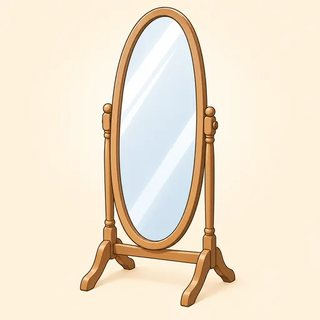
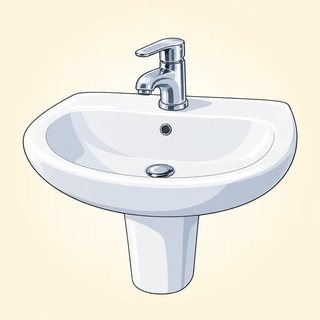

Fluency, Craft & the Final Project — Classroom Materials
Everything to print for Classes C23–C25: the Talk Around It picture cards and phrase cards, new identity cards, impromptu topic cards and curveballs, strategy spotter sheets, before/after editing cards, the four 30% Cut Challenge texts, the Keep Talking board game, the position paper kit (topic cards, side cards, viva roles, rotation sheet, chair's script, a spare planning frame), six question-card sets, the paper rubric and defense rubric, the teacher observation checklist that feeds C26, and the teacher's listening scripts.
What to Print
| Set | What | How many | Used in |
|---|---|---|---|
| A | Flashcards: Talk Around It picture cards (16) + phrase cards (time-buyers, repairs, editing moves, defense moves) | 1 set for the board; 1 picture set per pair (optional) | C23, C24, C25 |
| B | New identity cards (4) | 1–2 sets, on a side table | C23 |
| C | Impromptu topic cards (18, three piles) + curveball cards (6) | 1 set per group of 3 | C23 (and C26 closing speeches) |
| D | Strategy spotter sheets | 1 per group of 3 | C23 |
| E | Before/after editing cards (4 pairs) | 1 set per pair | C24 |
| F | 30% Cut Challenge texts A–D (ideas list on the back) | 1 text per group of 3 (print double-sided) | C24 |
| G | Game: Keep Talking (board, 22 squares) | 1 per group of 3–4 + a die or coin + counters | C23 early finishers, C24 warmer |
| H | Position paper kit: topic cards (16), side cards, viva role cards, rotation sheet, chair's script, spare planning frame | see the set | end of C23, C24, C25 |
| I | Question-card sets (6 sets × 4 cards) | 1 full set (24) per viva group | C25 |
| J | Paper rubric + defense rubric (peer / self / teacher) | 1 of each per learner + teacher copies | C24 (frames), C25, after C25 |
| K | Teacher observation checklist (C25 → C26) | 1–2 copies (teacher) | C25 |
| L | Listening scripts | Teacher only | C23, C24, C25 |
A · Flashcards — Talk Around It (8.1)
Picture cards for circumlocution. Hold one up and describe it without naming it; learners call out the word. Then pairs draw three face down and describe each with a different frame (the suggested frame is under each word). Stretch: no "thing," no "stuff": a precise category and function instead ("a device for…", "a piece of furniture that…").








A · Phrase Cards — Time-Buyers, Repairs, Editing & Defense Moves
Put the time-buyer and repair cards on the board in C23 and leave them up. Add the editing cards in C24 (as a "checklist" column) and the defense cards in C25 in order: check → concede → hold → hedge.
B · New Identity Cards (8.1)
Any learner may speak as a card character in the Warm-up round of the Impromptu Talks and in the Keep Talking game: no reason needed. Each card gives enough detail for a one-minute talk on a personal topic.
Lena — hospital pharmacist
Work: checks prescriptions on a busy ward · 12-hour shifts, three days a week · trains new staff
A skill I'm glad I learned: touch-typing, at 35, from a free online course
A small change I'd make: quiet rooms for staff breaks
Rafael — logistics coordinator
Work: plans delivery routes for 40 trucks · lives on his headset · loves a good spreadsheet
A skill I'm glad I learned: saying no politely to extra work
A small change I'd make: no meetings before 10 a.m.
Amara — graduate student in public health
Work: researching sleep and screen time in teenagers · tutors undergraduates twice a week
A skill I'm glad I learned: cooking for a week in two hours on a Sunday
A small change I'd make: longer library opening hours during exams
Joon — owner of a small bike-repair shop
Work: fixes 15–20 bikes a week · runs a free Saturday repair class · hates paperwork
A skill I'm glad I learned: basic bookkeeping
A small change I'd make: a protected bike lane on Main Street
C · Impromptu Topic Cards & Curveballs (8.1)
Three piles, face down. In Rounds 1 and 2 the speaker draws two cards and chooses one; anyone may say "Pass, next card" once per round. Personal topics may be answered with a new identity card or invented details. Don't add topics about politics, religion, immigration or home countries.
Curveball cards (Round 3): the timekeeper reveals one at the 30-second mark.
D · Strategy Spotter Sheets (8.1)
One sheet per group of 3. The spotter makes a tally mark for each strategy and each silence or restart, writes one example, and reports numbers and an example in 20 seconds, never a judgment. Three sheets per page: cut along the dashed lines.
| Speaker · round | ⏱ Bought time | 🔄 Talked around a word | 🔧 Smooth repair | ⛔ Silence (3 s+) / restart / "sorry" | One example I heard |
|---|---|---|---|---|---|
Filler the speaker used a lot: ______________ · Report: "You bought time __ times, talked around __ word(s), made __ smooth repair(s); one silence at about __ seconds."
| Speaker · round | ⏱ Bought time | 🔄 Talked around a word | 🔧 Smooth repair | ⛔ Silence (3 s+) / restart / "sorry" | One example I heard |
|---|---|---|---|---|---|
Filler the speaker used a lot: ______________ · Report: "You bought time __ times, talked around __ word(s), made __ smooth repair(s); one silence at about __ seconds."
| Speaker · round | ⏱ Bought time | 🔄 Talked around a word | 🔧 Smooth repair | ⛔ Silence (3 s+) / restart / "sorry" | One example I heard |
|---|---|---|---|---|---|
Filler the speaker used a lot: ______________ · Report: "You bought time __ times, talked around __ word(s), made __ smooth repair(s); one silence at about __ seconds."
E · Before / After Editing Cards (8.2)
Cut out the eight cards and shuffle them. Pairs match each BEFORE to its AFTER, then write the name of every cut in the margin: wordy phrase · redundant pair · intensifier · buried verb · double negative · tangle. The cuts are listed in small print on the AFTER cards: fold that strip under before class, or cut it off for a harder version.
"We would like to take this opportunity to thank each and every one of you for the very important contribution that you have made."
"Thank you all for your vital contribution."
Cuts: stock opener (We would like to take this opportunity to) · redundant pair (each and every one of you → all) · intensifier (very important → vital) · clause cut (that you have made)
"The manager carried out an investigation into the complaint and came to the conclusion that the error was not unintentional."
"The manager investigated the complaint and concluded that the error was deliberate."
Cuts: buried verbs ×2 (carried out an investigation into → investigated · came to the conclusion → concluded) · double negative (not unintentional → deliberate)
"In spite of the fact that the new system is really quite complicated, the vast majority of staff members have the ability to use it."
"Although the new system is complex, most staff can use it."
Cuts: wordy phrases (in spite of the fact that → although · the vast majority of → most · have the ability to → can) · intensifiers (really quite complicated → complex) · staff members → staff
"The meeting, which had been scheduled for Friday but which had to be postponed because the room that we had booked was needed for an event that had been organized at short notice, will now take place on Monday."
"The meeting was scheduled for Friday, but our room was needed for a last-minute event. It will now take place on Monday."
Cuts: tangle split into two sentences, main idea kept · organized at short notice → last-minute · relative clauses cut (that we had booked → our)
F · The 30% Cut Challenge — Texts A & B (8.2)
One text per group of 3. Print the ideas list on the back of each card for the meaning-keeper (or fold it under). Model versions are in the Module 8 answer key.
Dear all, I am writing this email in order to let you know about a number of changes that will be made to the schedule for the front desk in the near future. Due to the fact that a large number of customers have complained about very long wait times in the early morning, we have made the decision to carry out a review of the way in which shifts are organized. At this point in time, it seems to be the case that the busiest period is between 8 and 10 a.m., when there are actually only two people working at the desk. In the event that you have the ability to start earlier on one or more days, it would be really helpful if you could let me know. Each and every suggestion will be given careful consideration. Thank you very much in advance for your cooperation. Best, Maria
Ideas (meaning-keeper): ☐ the front-desk schedule will change soon ☐ reason: many complaints about long early-morning waits ☐ decision: review how shifts are organized ☐ busiest time seems to be 8–10 a.m. ☐ only two people at the desk then ☐ request: tell Maria if you can start earlier on one or more days ☐ every suggestion will be considered carefully ☐ thanks in advance · stays an email
It is not uncommon for residents of the Eastside neighborhood to be completely unaware of the fact that the community center, which is located on Park Street and which was renovated last year by a team of volunteers who had been recruited by the residents' association, offers a large number of free activities that are open to each and every member of the community. In addition to the very popular Saturday morning English conversation group, there are also classes in basic computer skills, a homework club for children of school age, and a repair café where people who have broken items can bring them in order to have them fixed by volunteers free of charge. Should you wish to obtain further information with regard to any of these activities, you are more than welcome to drop by at any point in time during opening hours, which are from 9 a.m. to 8 p.m., Monday through Saturday.
Ideas (meaning-keeper): ☐ many Eastside residents don't know about it ☐ the center is on Park Street ☐ renovated last year by volunteers (recruited by the residents' association) ☐ many free activities, open to everyone ☐ popular Saturday morning English conversation group ☐ basic computer classes ☐ homework club for school-age children ☐ repair café: volunteers fix broken items free ☐ drop by for details ☐ hours 9 a.m.–8 p.m., Mon–Sat
F · The 30% Cut Challenge — Texts C & D (8.2)
FocusFlow is basically a really simple app that has the ability to help you to make improvements to the way in which you manage your time. The app gives you the opportunity to make a plan for your day, and it also sends you reminders at regular intervals of time so that you do not forget about the tasks that you have planned to do. Research that has been carried out by the team that developed the app shows that users who make use of the app on a daily basis for a period of four weeks report that they feel very much less stressed and that they are able to complete a larger number of tasks. At the present time, the app is available free of charge, but in the near future there will be a premium version with additional extra features.
Ideas (meaning-keeper): ☐ a simple app ☐ helps you manage your time ☐ you can plan your day ☐ regular reminders so you don't forget tasks ☐ research by the app's own developers (the source!) ☐ daily use for four weeks ☐ users report feeling less stressed ☐ and completing more tasks ☐ currently free ☐ a premium version with extra features soon
In this section of the report, I will attempt to give an explanation of the reasons why it is the case that teenagers very often find it really difficult to get up early in the morning. It is not untrue to say that many adults are of the opinion that teenagers are simply lazy. However, a large number of research studies have reached the conclusion that during the teenage years the body clock actually shifts, with the result that teenagers do not start to feel sleepy until approximately 11 p.m. or even later. Due to the fact that most high schools start their classes at a very early hour, a considerable number of students are, in actual fact, attending lessons at a point in time when their brains are still, in a sense, asleep. This lack of sleep has a negative effect on their ability to concentrate, on their mood, and on the results that they achieve in exams.
Ideas (meaning-keeper): ☐ this section explains ☐ why teenagers often find it hard to get up early ☐ many adults think teenagers are lazy (the view being challenged) ☐ many studies conclude the body clock shifts in adolescence ☐ so teenagers aren't sleepy until about 11 p.m. or later ☐ most high schools start early ☐ many students attend lessons while still half asleep ☐ lack of sleep harms concentration ☐ mood ☐ exam results
G · Game — Keep Talking (8.1 → 8.2)
Roll a die (or flip a coin: heads = 1, tails = 2) and move. Do what the square says for about 30 seconds; the player on your right times you. ⏱ BUY TIME: start with a time-buyer, then answer. 🔄 TALK AROUND: describe the word so the group guesses it, without saying it. 🔧 REPAIR: say the sentence, including the mistake, and repair it smoothly. ✂️ SAY IT SHORTER: say the wordy sentence in half the words. ⏸ STOP: the player on your left asks you a follow-up question. If you freeze for more than three seconds or say "sorry," go back one square. Don't want to answer a personal prompt? Say "Pass" and answer the next square instead. New identity cards are fine.
| START ▶ | 1⏱ Buy timeWhat's the hardest thing about learning English at an advanced level? | 2🔄 Talk arounda stapler | 3🔧 Repair"The course lasts twelve weeks, or rather, thirteen…" (keep going) | 4✂️ Say it shorter"In the event that it rains, the picnic will be moved to a later date." | 5⏱ Buy timeIs it better to save money or to spend it on experiences? |
| 11🔄 Talk arounda landlord | 10✂️ Say it shorter"We made the decision to carry out a review of the budget." | 9⏱ Buy timeWhat makes a good neighbor? | 8🔧 Repair"I've lived here for five years, what I mean is…" (keep going) | 7🔄 Talk arounda traffic jam | 6⏸ STOPThe player on your left asks you a follow-up question. ◀ |
| 12⏱ Buy timeShould people take a complete break from their phones once a week? ▶ | 13🔄 Talk arounda receipt | 14⏸ STOPThe player on your left asks you a follow-up question. | 15✂️ Say it shorter"Due to the fact that the bus was very late, a large number of us missed the start." | 16🔧 Repair"The best way to relax is sleeping, let me rephrase that…" (keep going) | 17🔄 Talk arounda thermometer |
| FINISH 🏁 Talk for one minute: "What I've learned in C1." No freezing! |
22⏱ Buy timeWhat would you change about the way your workplace or school runs meetings? | 21🔄 Talk arounda deadline | 20✂️ Say it shorter"It is not uncommon for people to be very surprised by the end result." | 19🔧 Repair"There were about twenty people, or should I say…" (keep going) | 18⏱ Buy timeAre video calls as good as meeting in person? ◀ |
The path snakes: row 1 left → right (1–5), row 2 right → left (6–11), row 3 left → right (12–17), row 4 right → left (18–22), then FINISH. Model "shorter" answers: 4 "If it rains, the picnic will be postponed." · 10 "We decided to review the budget." · 15 "Because the bus was so late, many of us missed the start." · 20 "People are often astonished by the result."
H · Position Paper Kit — Topic Cards (8.3)
Hand these out at the end of C23. Learners choose one or draw one. Each question is arguable from both sides, and learners may draw a side card so that they argue an assigned position. Don't add topics about party politics, religion, immigration, policing, war or national identity, and don't use the government-policy prompts from the online lesson in class. A learner may propose their own topic if it stays in this territory: approve it before they start.
H · Position Paper Kit — Side Cards, Viva Roles & Rotation
Side cards: print several of each; learners who want an assigned position draw one with their topic. Role cards: one set per viva group; learners pass them on as the roles rotate.
Summarize, then defend.
Give a 2-minute opening statement from 3–4 key words: your thesis, your arguments, the objection and your answer. Then answer the examiners' questions: check the question if needed, concede what is fair, hold what is sound.
My paper addresses the question of whether… · My case rests on… · If I've understood your question… · That's a fair point. That said, …
Read closely. Ask two questions.
You have read this paper carefully. Ask two questions, at least one of them challenging (evidence, objection or consequence). You may ask one short follow-up. Question the argument, never the person.
You say that… What's your evidence? · Someone might object that… How would you respond? · So would you accept that…?
Ask one or two different questions.
Choose a different question type from the lead examiner's: scope, clarification or a wildcard. Listen to the answers so far and build on them.
Building on that question… · Where would you draw the line between…? · Which of your arguments is the weakest?
Keep it fair, keep it moving.
Follow the chair's script. Show "30 SECONDS" and "TIME." Keep the Q&A to about 5 minutes. Stop any question that becomes personal. Ask one question yourself if there is time.
Let's keep to the argument. Next question, please. · We have time for one more question.
| Viva | Candidate | Lead examiner | Second examiner | Chair & timekeeper |
|---|---|---|---|---|
| 1 | A: ____________ | B: ____________ | C: ____________ | D: ____________ |
| 2 | B | C | D | A |
| 3 | C | D | A | B |
| 4 | D | A | B | C |
Groups of 3 (about 12 minutes per viva): 1 · A candidate, B lead, C second + chair · 2 · B, C, A · 3 · C, A, B. Read closely: the paper you lead-examine and the paper you second-examine.
H · Position Paper Kit — The Chair's Script
One copy per viva group. The chair changes every round; pass the script on.
- Introduce (15 s): "Welcome to this viva. Our candidate is . The paper addresses the question: . , you have two minutes for your opening statement."
- Time the statement (2 min): show "30 SECONDS," then "TIME." → "Thank you."
- Lead examiner (about 2½ min): ", would you like to begin the questions?" (Two questions, one short follow-up allowed.)
- Second examiner (about 1½–2 min): "Thank you. , your questions, please."
- Chair's question (if time): "I have one question myself: …" or "We have time for one more question."
- If a question becomes personal or unkind: "Let's keep to the argument, please. Could you rephrase that as a question about the paper?"
- Close (1 min): "Thank you, . Examiners, one star and one wish, please." (Examiners circle the defense rubric.) "Please thank our candidate." → Rotate.
H · Spare Planning Frame (for new or absent learners)
The same frame as in Workbook 8.3. Notes only; the paper comes later.
| Question (topic card) | |
|---|---|
| Position | ☐ my choice ☐ assigned (side card) → |
| 1 · Thesis | This paper argues that |
| 2 · Argument A + support | |
| 3 · Argument B + support | |
| 4 · Strongest objection | It might be objected that |
| 5 · Rebuttal | This concern, while valid, |
| 6 · Conclusion | On balance, |
| C1 tools | ☐ hedging ☐ participle clause ☐ inversion / cleft ☐ conditional ☐ nominalization + cohesion ☐ academic collocation |
I · Question-Card Sets (8.3)
One full set (24 cards) per viva group, spread face up on the table during reading time. Examiners choose cards and adapt them to the paper on a sticky note: a question that names the paper's own claim is always stronger than a generic one. Lead examiners need at least one challenging card (📊, ⚖️ or 🔮).
J · Paper Rubric (self & teacher)
Self: learners use the short version in Workbook 8.3 before they send the paper. Teacher: circle a level for each criterion and write one strength and one next step; return the paper with feedback at C26. Use it for feedback, not as a grade.
Writer: ____________________ Topic: ____________________ Words: ______
| Criterion | ★★★ Strong C1 (toward C2) | ★★ C1 | ★ Not yet |
|---|---|---|---|
| 1 · Position & thesis | A clear, arguable, specific thesis in the first paragraph; the position is maintained and sharpened to the end | Clear position, but the thesis comes late, is broad, or drifts in places | No clear position; a survey of views or a list of facts |
| 2 · Arguments & support | Two or three distinct arguments, each with convincing, relevant support (evidence, example, consequence); claims calibrated to the evidence | Arguments have reasons, but support is general or uneven; some overclaiming | Opinions without support; overclaiming throughout |
| 3 · Counter-argument & rebuttal | The strongest real objection, stated fairly, and a rebuttal that answers that objection | An objection and a rebuttal, but the objection is weak or the answer is thin | Missing, or a straw man |
| 4 · Organization & cohesion | Logical paragraphing with clear topic sentences; reference, linkers and nominalization knit ideas smoothly | Mostly clear; some mechanical linking or a weak paragraph | Hard to follow; ideas are not connected |
| 5 · Range & precision | Several C1 structures (hedging, participle clause, inversion/cleft, conditional, nominalization) and academic collocations used naturally, where the argument needs them | Some C1 structures; occasional forced or imprecise use | Mostly B2 language; vague word choice |
| 6 · Accuracy, register & concision | Few, minor errors; consistently formal but readable; tight, edited prose (450–550 words) with no padding | Some errors that don't block meaning; register mostly right; some padding | Frequent errors that affect meaning; too informal or stiff; padded or far over length |
J · Defense Rubric (peer, self & teacher)
Examiners: circle one level per criterion for your candidate, then write one star and one wish. Self: learners use the short version in Workbook 8.3. Teacher: use it with the observation checklist, not as a grade.
Candidate: ____________________ Examiner: ____________________ Topic: ____________________
| Criterion | ★★★ Strong C1 (toward C2) | ★★ C1 | ★ Not yet |
|---|---|---|---|
| 1 · Opening statement | A clear 2-minute summary from notes: thesis, arguments, objection and answer, well signposted | Clear but partly read, or runs short/long | Reads the paper aloud, or loses the thread |
| 2 · Understanding the questions | Answers exactly what was asked; checks the question when unsure | Mostly on target; one answer drifts to a prepared point | Often misunderstands, or answers a different question |
| 3 · Concede & hold | Concedes fair points genuinely, then holds the position with a reason; never collapses or stonewalls | Concedes and holds, but sometimes gives up too much or too little | Collapses at the first challenge, or refuses to concede anything |
| 4 · Hedging & calibration | Refines claims under pressure ("So I'd put it more cautiously…"); certainty matches the evidence | Some hedging; an occasional overclaim | Overclaims, or hedges everything until no position remains |
| 5 · Fluency strategies | Keeps going smoothly: buys time, paraphrases, repairs; no freezing | One or two long pauses, recovered | Freezes or restarts often; needs rescuing |
| 6 · Delivery & interaction | Calm pace, clear stress and pausing, courteous register, engages each examiner | Mostly clear; sometimes hurried or flat | Hard to follow; defensive or hesitant |
K · Teacher Observation Checklist · C25 → C26
Observe during the warmer, the reading and question preparation, and the vivas (you rotate between groups). Mark ✓ did it clearly · ~ did it with support, or with errors that affect meaning · ○ not yet / not observed. You don't need a mark in every box; add item 2 from the paper itself after class. Then use it to (1) plan each learner's C26 assessment. The C1 final assessment is an individual speaking interview (about 10 minutes) plus listening, reading and writing tasks — see the kit's C1 final assessment; match these notes to its speaking criteria and decide where each learner should start, (2) choose the two weakest items for a short C26 warm-up, (3) name one real strength for each learner on their returned paper, and (4) note who needs encouragement. This is not a grade.
- 1 Opening statement: summarizes from notes, signposted, on time
- 2 Paper: clear thesis, supported arguments, a real objection answered
- 3 Understands questions at natural speed; checks when unsure
- 4 Concedes and holds (That's a fair point. That said…)
- 5 Hedges and refines claims; no overclaiming or collapse
- 6 Fluency strategies: buys time, paraphrases, repairs; no freezing
- 7 C1 range in speech: inversion, cleft, conditional, participle clause, nominalization
- 8 Precision & concision: strong verbs, exact words, no padding
- 9 Accuracy & register: formal but natural, errors rarely affect meaning
- 10 As examiner / chair: asks a sharp, fair question; manages turns
| Learner | 1 | 2 | 3 | 4 | 5 | 6 | 7 | 8 | 9 | 10 | Topic · strength · C26 notes |
|---|---|---|---|---|---|---|---|---|---|---|---|
Two items with the most ~ / ○: ______ and ______
Warm-up plan: ______________________
Ready for C2 / demanding academic or professional English: ______________________
More C1 consolidation first: ______________________
Quiet word before C26: ______________________
L · Listening Scripts (Teacher)
Read at natural C1-appropriate speed: the speed of a clear, thoughtful adult, not a newsreader and not a slowed-down "teacher voice." Pauses and time-buyers are part of the text: perform them. Where a script has two voices, use a small change of position or pitch, or ask a confident learner to read one part after rehearsing it with you.
8.1-A · Freeze or flow? (lead-in, Workbook 8.1 Ex 1: read Speaker 1, then Speaker 2)
Answers: wall 1 "That's a good question. Let me think for a second" · wall 2 "the date when everything has to be finished" (deadline) · wall 3 "three projects, or rather, four." Speaker 2 is not faster; she simply never stops.
8.1-B · The filler audit (Workbook 8.1 Ex 5: natural speed, fillers light and fast; then the clean version)
About 23 fillers (accept 18–25). Ask: "Which version sounds more confident? Did the clean version lose any meaning?" (No.) "Which two markers survived, and why?" (actually = contrast; I mean = clarification.)
8.1-C · The interview with Maya (the workbook dialogue: two voices; learners underline strategies)
Ask: "Maya forgot a word, started to overstate, and paused twice. Did she sound weak?" (No: every wobble was filled.) Strategies are listed in the answer key.
8.1-D · What am I describing? (circumlocution stage: read each once; learners write the word)
Answers: 1 a stapler · 2 a dentist · 3 a newsstand (a kiosk) · 4 a moped / a motor scooter / an e-bike · 5 insomnia · 6 long-term parking (the airport parking lot). Then ask: "Which frame did I use each time?" (function · role · category · comparison · situation · place.)
8.2-A · In the Editing Room (the workbook dialogue: two voices; learners list the four cuts)
8.2-B · Say it shorter (drill: read the wordy version; learners say the concise one)
Models: 1 To save money, we'll walk. · 2 Because it was raining, the game was canceled. · 3 We can now deliver on Saturdays. · 4 The team decided to review the process. · 5 New staff often feel nervous. · 6 Although the room was tiny, many people came. · 7 Thank you to every volunteer. · 8 If you have any questions, please contact me. (In a formal email, "please don't hesitate to contact me" is a fixed courtesy: accept it as a deliberate choice.)
8.3-A · Priya's defense (Workbook 8.3 Ex 1: four voices; adapted from the online lesson in American English)
Listen 1: "What's her position? Does she change it?" (Car-free centers. No, but she refines it twice.) Listen 2: Workbook Ex 1 (answers in the answer key). Point out the three moves: concede (a blanket ban would be unfair) → hold (the principle stands) → hedge (it works best alongside investment), and the check before answering Questioner 3.
8.3-B · A model opening statement and two model answers (defense language stage: about 3 minutes in all; based on the model paper in Workbook 8.3)
Ask: "How is the opening statement different from the paper?" (Shorter, spoken, signposted, "I think," contractions; it names the objection before the examiners do.) "What does the candidate do in the second answer?" (Checks the question, concedes the evidence is strongest for 8:30, refines the claim, keeps the position.)